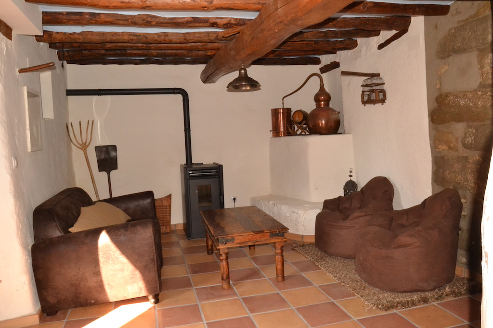
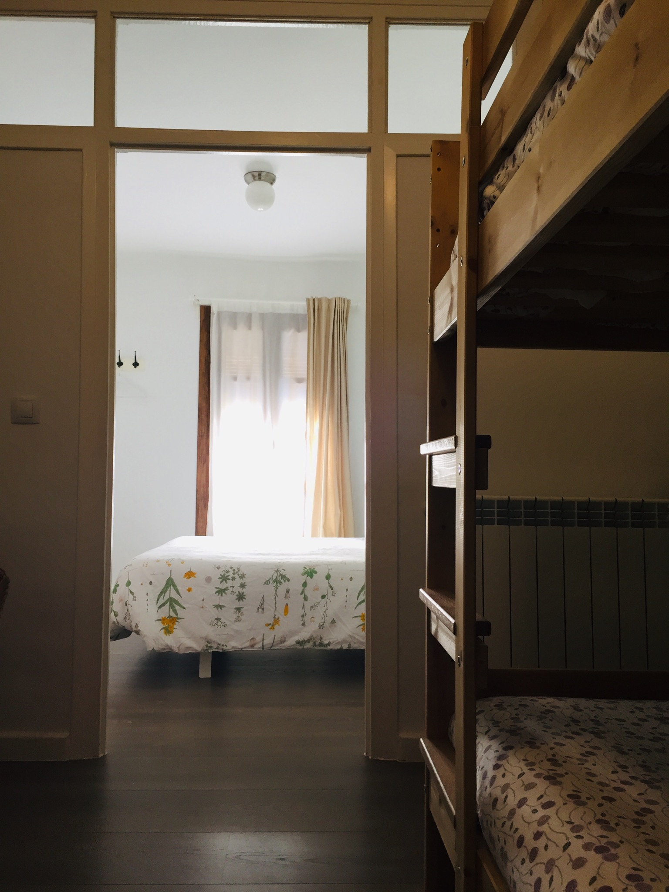
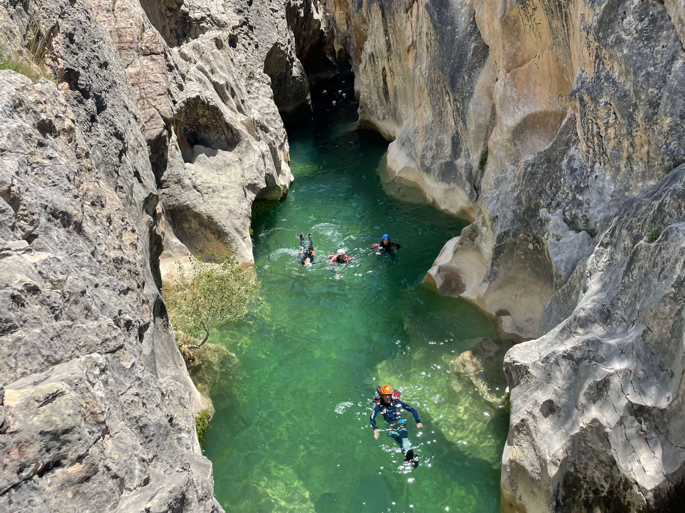
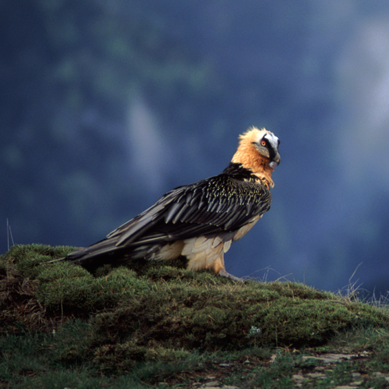
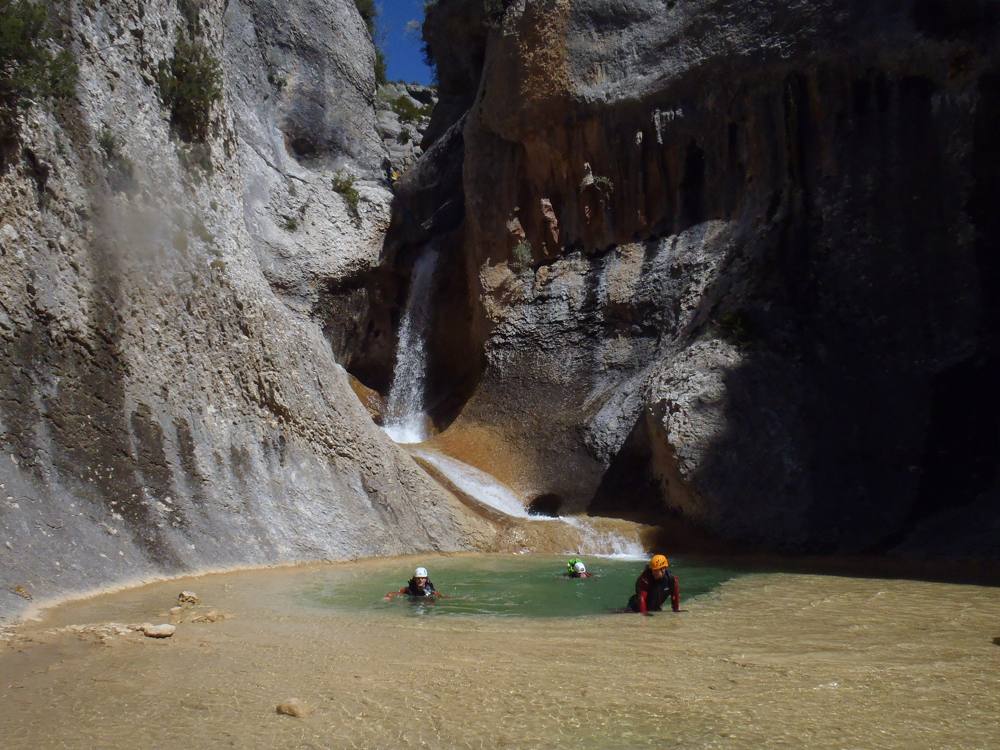
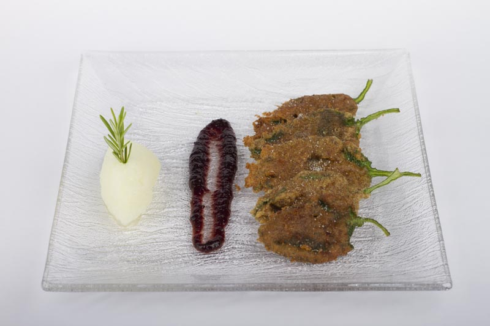

Desayuno incluido
Desayuno estilo continental incluido en el precio de todas las habitaciones. Pan, embutidos, mermeladas, fruta, zumos, café y mucho más.
Todo incluido en tu estancia
Queremos que tu estancia sea cómoda, sencilla y llena de momentos para recordar. Aquí encontrarás todo lo que necesitas para desconectar de verdad.
De serie, sin sorpresas
Desayuno estilo continental incluido en el precio de todas las habitaciones. Pan, embutidos, mermeladas, fruta, zumos, café y mucho más.
Televisión y conexión WiFi disponibles en las estancias comunes de la casa, para que puedas estar conectado cuando lo necesites.
La casa dispone de calefacción para garantizar tu confort durante las noches frescas de la Sierra de Guara.
Disponemos de cuna para los más pequeños de la familia. Consulta disponibilidad al hacer tu reserva. Coste: 10 €.
Lavadora a disposición de todos los clientes para que puedas alargar tu estancia sin preocupaciones.
El mejor comienzo del día
En Casa Perarruga sabemos que el desayuno es la comida más importante del día, y es por eso que podrás encontrar cada mañana una gran variedad de productos, algunos caseros como nuestros bizcochos entre otras cosas, como tostadas, embutidos, mermeladas, cereales, fruta, zumos, café, leche e infusiones.
¡Bajo petición desayunos para celíacos e intolerantes a la lactosa!


El desayuno se sirve en la cocina comedor de la casa, una estancia muy agradable que hace del desayuno un placer. También, si prefieres, puedes desayunar en nuestra terraza. Asimismo, la cocina está perfectamente equipada y a disposición de los clientes, por si prefieres algún día prepararte allí la comida o la cena.




Sabores del Somontano
Nuestra comarca posee una gran variedad de productos criados o cultivados por productores locales o elaborados con materias primas y recetas que recogen la tradición y el saber hacer de los artesanos. En la casa ofrecemos la posibilidad de adquirir una gran variedad de estos productos, tales como:
Descubre el entorno
Si lo deseas, te reservamos tu actividad de barranquismo y visita guiada en bodegas de la zona. En la casa encontrarás información de la zona a tu disposición.
¿Quieres que te reservemos una actividad? Consúltanos
Excursiones, centros de interpretación, barranquismo para familias, vías ferratas adaptadas y mucho más para los pequeños.

Más de 60 abrigos con pinturas rupestres declaradas Patrimonio de la Humanidad por la UNESCO. Historia viva en plena naturaleza.

Aventura para todos los niveles en los cañones de la Sierra de Guara. Te ayudamos a contactar con los mejores guías de la zona.

La Sierra de Guara es un referente nacional para la escalada. Rutas para todos los niveles entre paredes de roca caliza espectaculares.

Observa milano real, quebrantahuesos, buitre leonado y una gran variedad de rapaces y aves en su hábitat natural.

Déjate enamorar por la Sierra de Guara: ríos cristalinos, bosques de ribera, cascadas y paisajes de montaña que quitan el aliento.

Varias rutas señalizadas para recorrer a pie o en bicicleta de montaña. Paisajes únicos a tu propio ritmo.

Gran propuesta gastronómica con productos locales de primera calidad. El Somontano tiene una identidad culinaria propia y deliciosa.

Posibilidad de hacer catas y visitas guiadas a las bodegas de la Denominación de Origen Somontano. Una experiencia sensorial única.

Alquézar, considerado uno de los pueblos más bonitos de España, está a tan solo unos kilómetros. Un imprescindible de tu visita.
¿Listo para desconectar?
Disfruta de todos estos servicios y descubre el Somontano en un entorno tranquilo, auténtico y lleno de encanto.